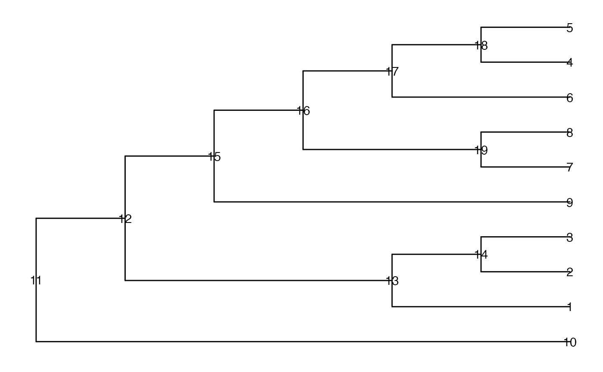

treeScore takes the tree structure into account when calculating the
score for an internal node. If an internal node A has two children B and C,
(A->B, A->C), the new score at node A would be calculated as the
weighted mean of the scores in the whole family (A, B and C). The weights are
based on the number of descendant leaves. For example, if the node B has 2
descendant leaves, and C has 3 descendant leaves, then A would have 5. The
calculation would be \((Score\_A * 5 + Score\_B * 2 +Score\_C * 3)/10\).
The generation starts from the leaves and the new generated scores are used
to update those in higher level of the tree until the root is reached.
treeScore(tree, score_data, node_column, score_column, new_score)A phylo object.
A data frame that includes at least two columns. One column stores the number of the node, and the other stores the original score of the corresponding node.
The name of the column of score_data that contains
the numbers of the nodes.
The name of the column of score_data that
contains the original scores of the nodes.
The name of the column that stores the generated score.
A data.frame similar to score_data, but with an
extra column (named new_score) containing the weighted scores.
suppressPackageStartupMessages({
library(TreeSummarizedExperiment)
library(ggtree)
library(dplyr)
})
## tree
data(tinyTree)
ggtree(tinyTree, branch.length = "none") +
geom_text2(aes(label = node))

## score
exScore <- data.frame(nodeNum = seq_len(19), score = (seq_len(19))/10)
## Calculate new score based on the tree
newScore <- treeScore(tree = tinyTree, score_data = exScore,
node_column = "nodeNum",
score_column = "score",
new_score = "wScore")
## Visualize the result
## The original scores are in black texts and the new ones in blue
df <- newScore |>
rename(node = nodeNum) |>
mutate(score = round(score, 3),
wScore = round(wScore, 3))
ggtree(tinyTree) %<+%
df +
geom_text2(aes(label = score), hjust = -0.05) +
geom_text2(aes(label = wScore, hjust = -1.2),
color = "blue")